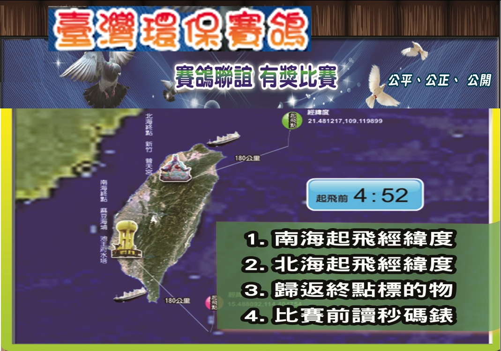
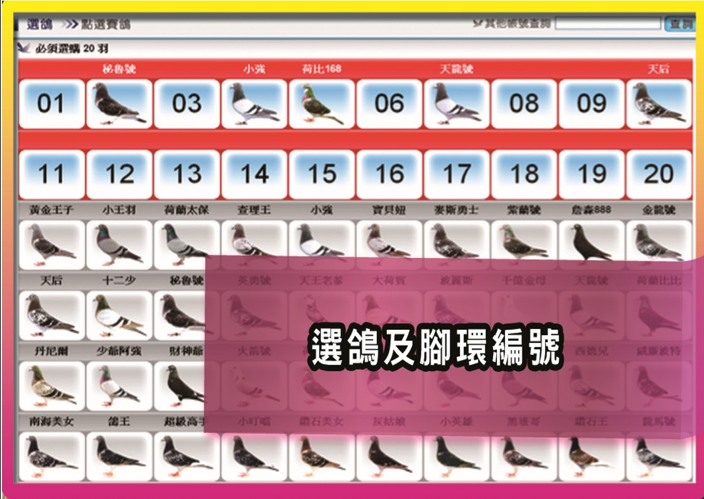
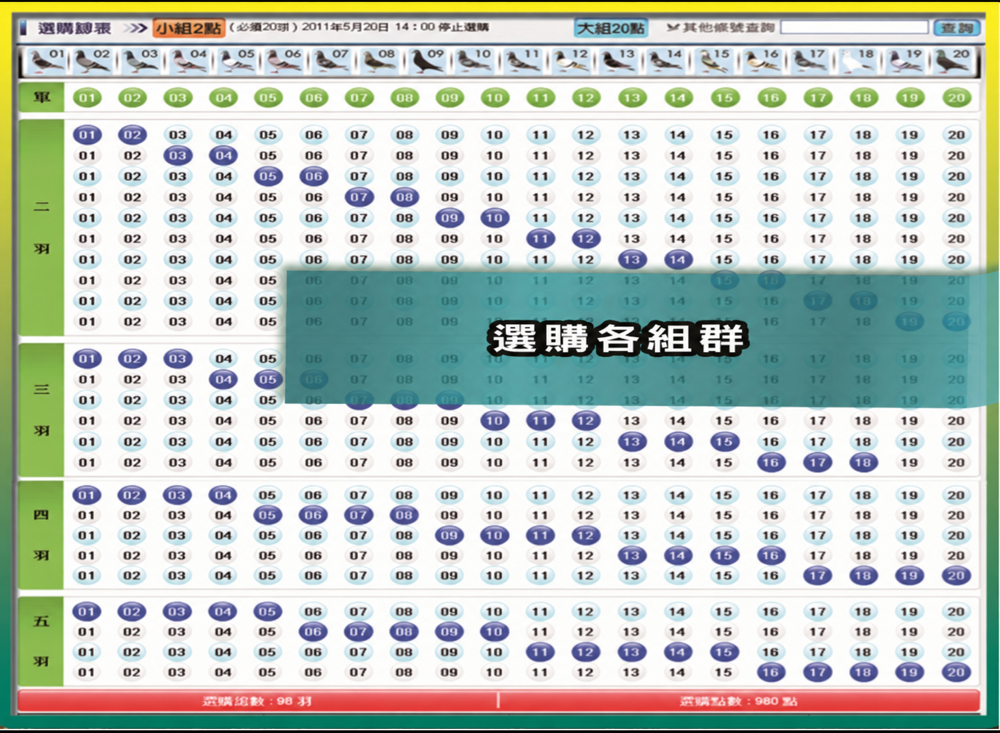
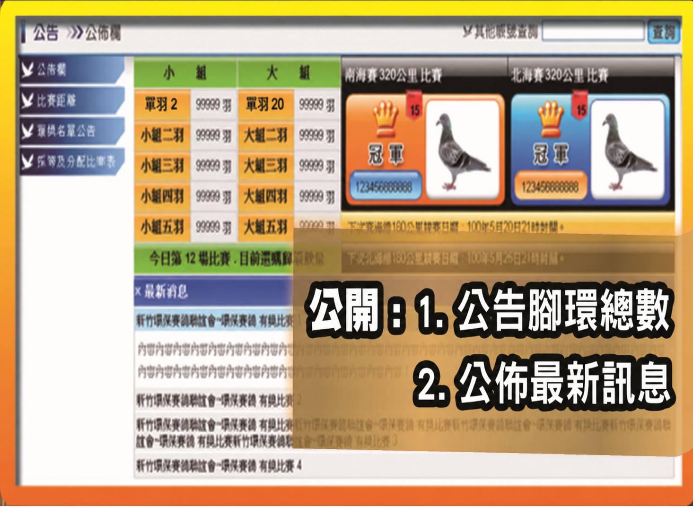
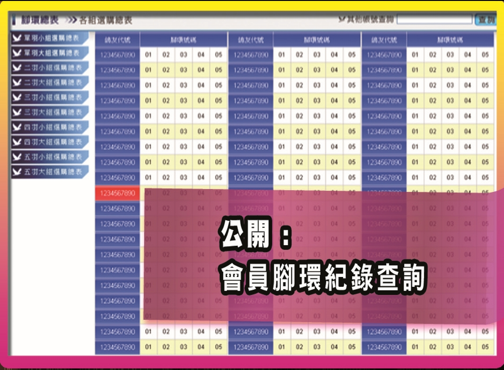
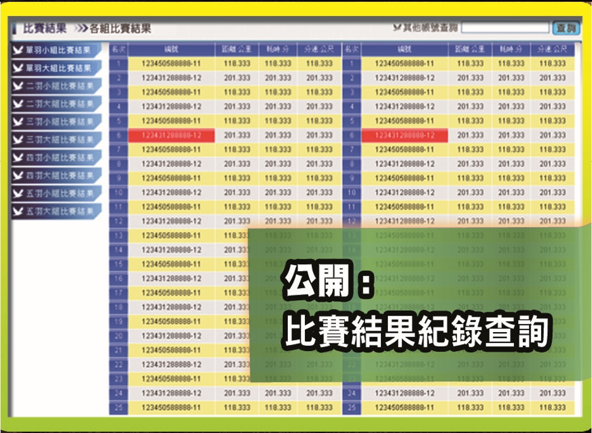
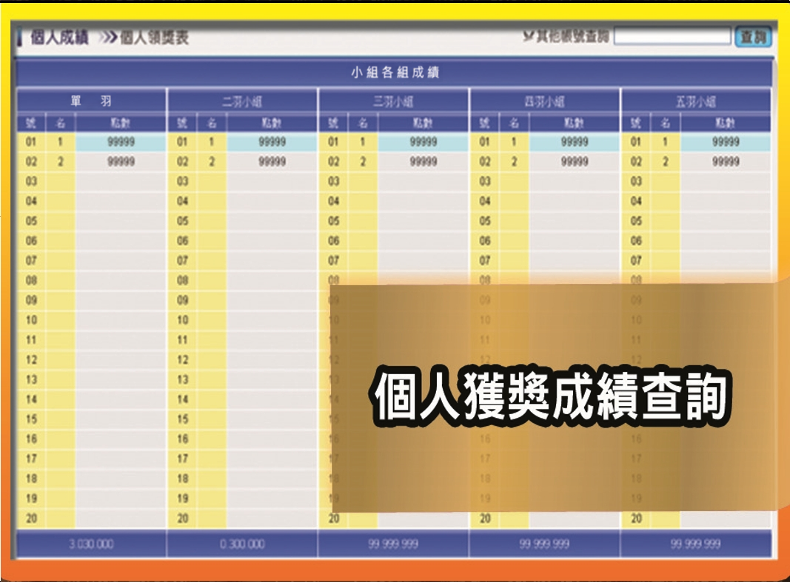
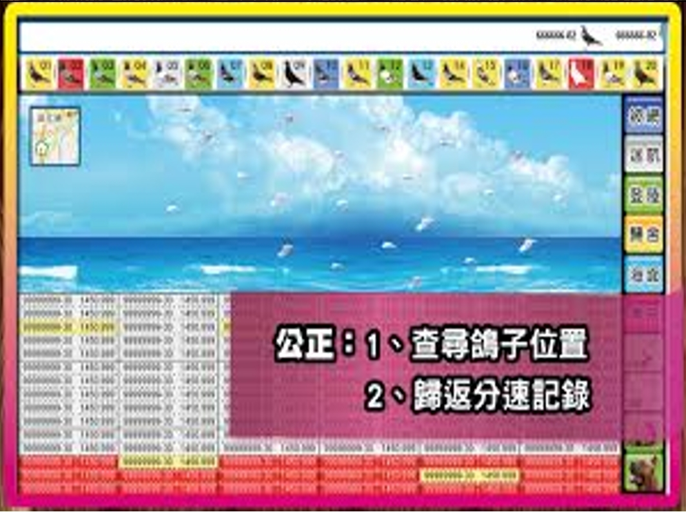
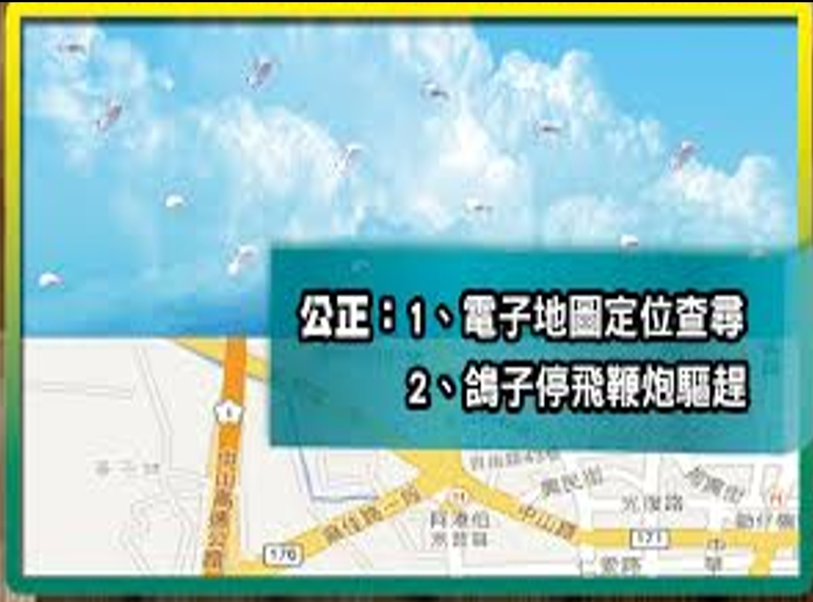
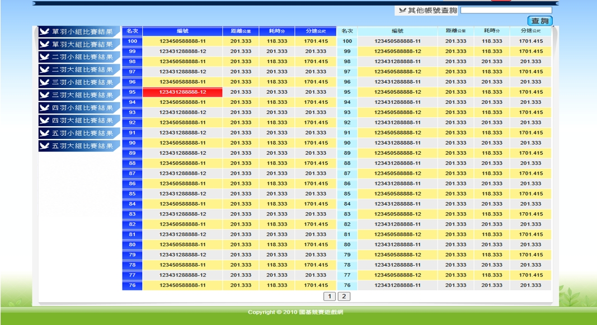
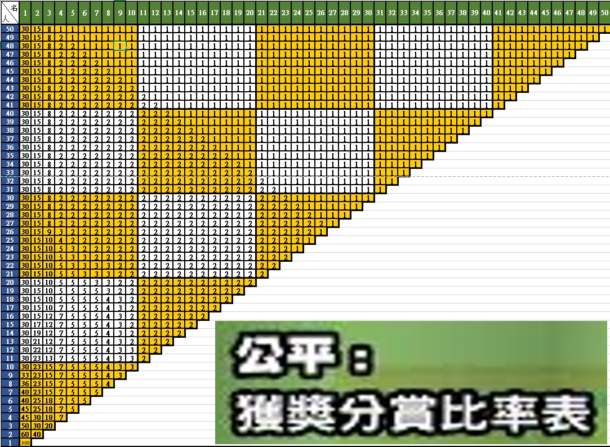
國基電腦股份有限公司
歷 年 事 蹟
- 72年 6月29日公司成立。
- 75年 至88年設立學甲區、麻豆區 證券資訊站（電視牆各兩面）。
- 75年 金防部、金門縣政府特准設立，金門特產中心專賣部。
- 76年 全臺第一家電玩機台 合格製造廠。
- 79年 開發全球第一套 電腦賓果、魔術盤遊戲機台 (含管理系統)。
經濟部評鑑為娛樂類。內銷檢驗註冊第622001號。
- 89年 承包監察院網路伺服器，工作站規格。
- 89年 承包國立成功大學醫學院，手提GPS定位儀。
- 89年 獲得中華民國傑出企業領導人，金峰獎。
- 90年 內政部消防署，救災救護指揮派遣系統建議書。
- 90年 獲得資訊科技人才，金像獎。
- 90年 內政部委託代售，『臺灣地區地形圖及衛星地圖』。
- 90年 中華民國航空測量及遙感探測學會，委託代售『臺灣本島衛星影像地圖』。
- 91年 開發全球第一套，衛星監控導航管理系統，含電子地圖、車機 ( GPS 收發器 )。
- 91年 海巡署海洋巡防總局，（船隻）使用衛星監控導航系統。
- 92年 海巡署海岸巡防總局，（車輛）使用衛星監控導航系統。
- 93年 開發 掃街車、灑水車，全自動衛星監控管理系統。
- 93年 臺中縣、彰化縣、雲林縣、臺南縣、台東市，使用掃街車全自動衛星監控管理系統。
- 93年 開發車隊通報，衛星監控管理系統。
- 93年 南亞塑膠公司嘉義廠，使用車隊通報管理系統。
- 94年 交通部核發，電信管制射頻器材製造許可證。
- 94年 開發賽鴿管理系統含電子地圖。
- 95年 開發電子監控管理系統，含電子地圖、收發器、隨身收發器。
- 95年 法務部性侵犯，使用第一代 電子監控管理系統（亞洲唯一電子腳鐐）。
- 95年 中科院初期研發雄三飛彈製程時，由國基電腦公司提供。
- 95年 協助澎湖縣、台南縣、雲林縣遊藝場業者，申領營業執照及成立公會。
- 96年 電腦賓果魔術盤，轉換成 線上遊戲。
- 98年 開發運動彩劵快簽系統。
- 99年 開發臺灣環保賽鴿有獎比賽遊戲軟體。
- 臺南縣消防局，緊急防災救護資源管理系統，建議計劃書。
- 臺灣省彰化農田水利會，農田水利設施管理之地理資訊系統建立、計畫服務建議書。
- 臺南縣都市計劃，書圖管理、地理資訊系統、服務建議書。
- 臺北縣消防局，緊急防災救護、資源管理系統，建議計劃書。
- 臺北縣消防局，緊急防災救護GPS消防車、救護車、指揮派遣支援系統，建置計劃書。
公 司 開 發 之 產 品
- 線上遊戲，電腦賓果魔術盤。
- 衛星監控導航管理系統，含硬體設備、電子地圖。
- 全自動掃街車、灑水車，衛星監控及計程管理系統，含硬體設備、電子地圖。
- 車隊定點通報管理系統，含硬體設備、電子地圖。
- 隨身收發器電子監控，含硬體設備、電子地圖（法務部性侵犯，第一代電子腳鐐）。
- 賽鴿管理系統，含電子地圖。
- 運動彩劵快簽系統。
- 線上遊戲，臺灣環保賽鴿 有獎比賽遊戲軟體。